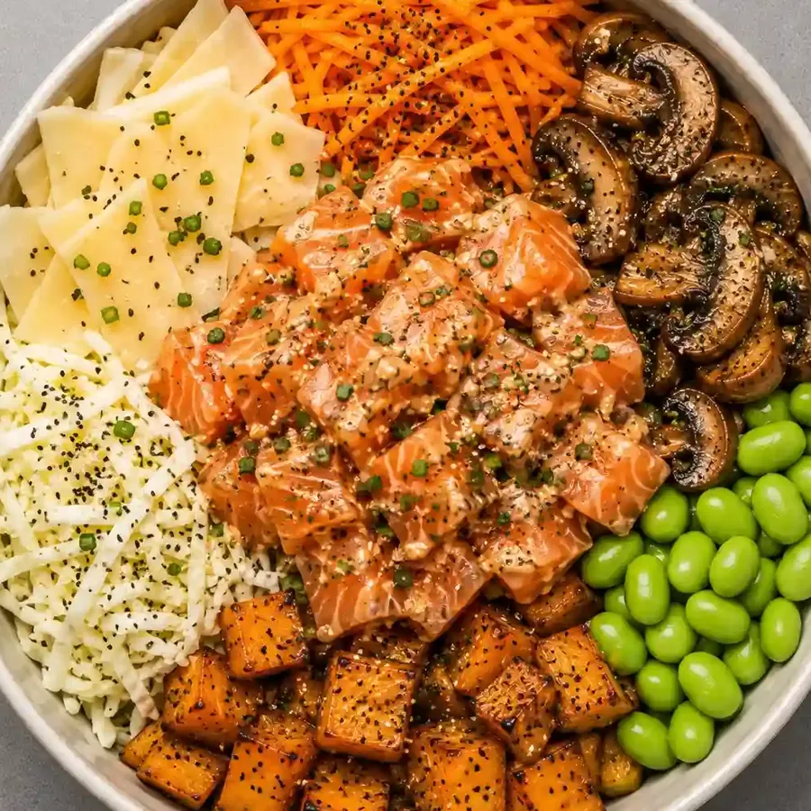
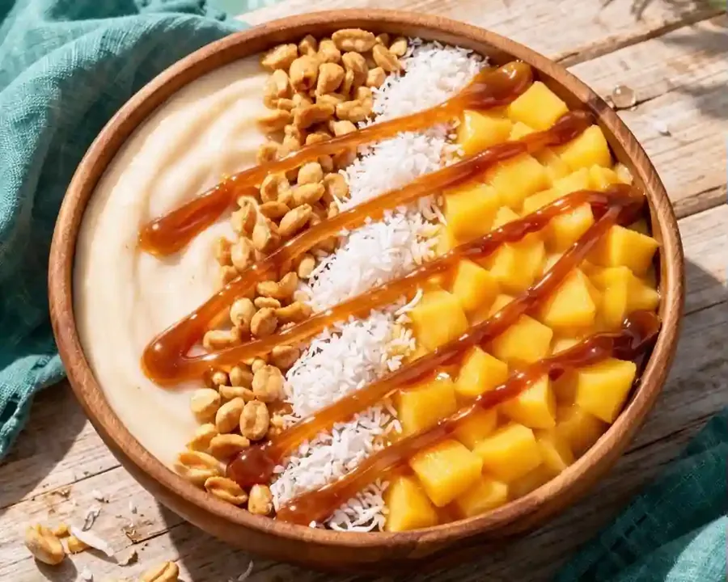

Affiche rétro : 3 propositions
Trois mises en page d’affiche, chacune dans un esprit sérigraphie différent. Rien que des formes dessinées en code et les vraies photos de Rive Bowl. Choisis-en une, elle remplacera l’affiche de l’accueil.
A · Le bowl géant
 Rive
Bowl
Fait
Rive
Bowl
Faitmaison Le poké qui vient de chez nous
Un bowl énorme qui sort du cadre, le nom empilé en très grand, des rayures en diagonale. Effet « gros plan qui claque ».
B · Le texte qui tourne

Vous allez en redemander !
Pokéterroir
Le bowl au centre d’une cible, le nom qui tourne tout autour, un quart de damier et une bulle. Effet « disque vinyle, enseigne de fête foraine ».
C · La diagonale



Montjean-
sur-Loire
Un collage de 3 photos scotchées, une énorme bande en travers et un double cadre décalé. Effet « affiche de concert collée sur un mur ».
Page interne Studio FTT, non référencée. Les animations s’arrêtent avec « réduire les animations ».